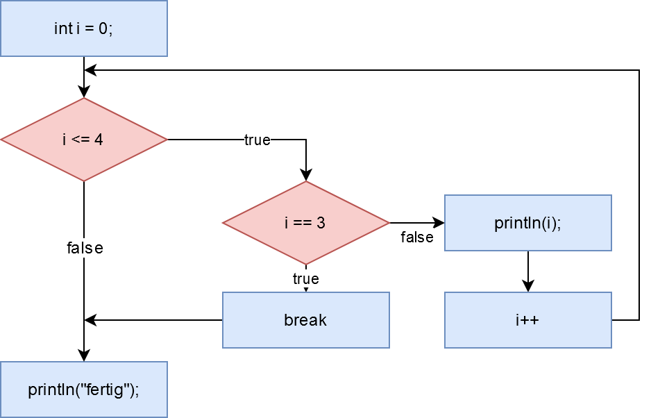
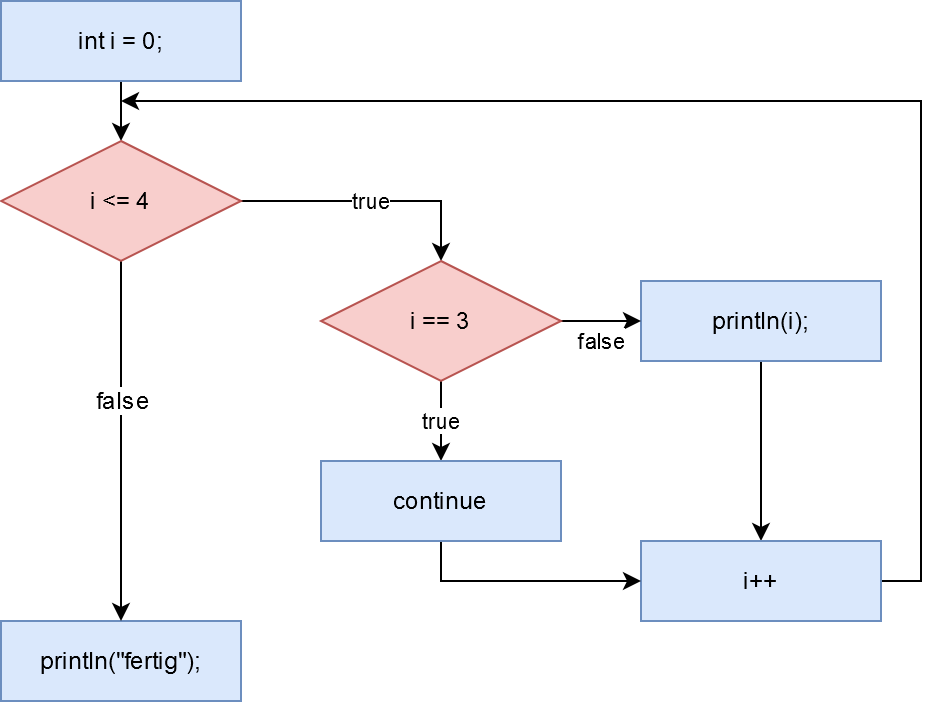

Nun haben wir uns einige Schleifen angesehen, mit denen Code eine gewisse Anzahl von Malen durchlaufen werden kann. Jetzt kann es aber auch sein, dass du eine Schleife auch einmal mittendrin abbrechen möchtest, wenn ein gewisser Fall eintritt.
Dies kannst du mithilfe von Kontrollanweisungen (eng. control statements): break und continue.
Schleifenabbruch: Break
Mithilfe des Befehls break, kannst du eine Schleife abbrechen. Das bedeutet, dass sofort mit dem Code danach weiter gemacht wird:
for (int i = 0; i <= 4; i++) {
if(i == 3) break;
print(i);
}
println(" Fertig!");Das ergibt in der Konsole folgendes
012
Fertig!In einer Tabelle sieht das wie folgt aus:
| Durchlauf | i | i <= 4 | i == 3 | Ausgeführter Code |
| 1 | 0 | true | false | print(i); |
| 2 | 1 | true | false | print(i); |
| 3 | 2 | true | false | print(i); |
| 4 | 3 | true | true | break; |
| 5 | 4 | true | false | ---- |
Im vierten Durchlauf ist i = 3, wodurch die break-Anweisung ausgeführt wird und die Schleife sofort abgebrochen wird. Die Anweisung print(i), welche direkt danach kommt, wird nicht mehr durchgeführt.
Als PAP sieht ein break folgendemaßen aus:

Iterationsabbruch: Continue
Mithilfe des Befehls continue, kannst du die aktuelle Iteration (Durchlauf) einer Schleife abbrechen. Die Schleife macht dann mit dem nächsten Durchlauf weiter:
for (int i = 0; i <= 4; i++) {
if(i == 3) continue;
print(i);
}
println(" Fertig!");Das ergibt in der Konsole folgendes:
0124
Fertig!In einer Tabelle sieht das wiefolgt aus:
| Durchlauf | i | i <= 4 | i == 3 | Ausgeführter Code |
| 1 | 0 | true | false | print(i); |
| 2 | 1 | true | false | print(i); |
| 3 | 2 | true | false | print(i); |
| 4 | 3 | true | true | continue; |
| 5 | 4 | true | false | print(i); |
Im vierten Durchlauf ist i = 3, wodurch die continue-Anweisung ausgeführt wird und die aktuelle Iteration sofort abgebrochen wird. Die Anweisung print(i), welche direkt danach kommt, wird nicht mehr durchgeführt. Die Schleife macht mit der nächsten Iteration weiter, so dass in der Konsole die 4 angezeigt wird. Als PAP sieht ein continue folgendemaßen aus:

Aber wozu gibt es continue überhaupt? Wir könnten auch ohne continue eine Schleife schreiben, die sich auf dieselbe Weise verhält, indem wir die Bedinung im if anpassen. Wir wollen immer println(i) ausführen, außer wenn i == 3 ist. D.h. folgende Schleife würde dasselbe Ergebnis liefern:
for (int i = 0; i <= 4; i++) {
if(i != 3) print(i);
}
println(" Fertig!");Anstatt die Iteration abzubrechen mit continue könnten wir auch einfach den Code komplett in eine if-Abfrage packen. continue und break haben aber noch eine weitere Funktion und zwar kannst du in verschachtelten Schleifen festlegen, welche Schleife abgebrochen wird bzw. in welcher Schleife weitergemacht werden soll.
Label
Wenn man sich nun innerhalb verschachtelter Schleifen befindet, kann es sein, dass man mithilfe von break nur eine bestimmte oder aber auch alle Schleifen abbrechen möchte. Doch wie kann ich meinem Programm mitteilen, welche Schleife(n) ich "breaken" bzw. in welcher Schleife ich "continuen" möchte?
Hierfür gibt es in Java (und Processing) sogenannte Labels. Labels sind sowas wie ein Name für die Schleife, die man als "Link" verwenden kann. Um eine Schleife zu labeln kannst du einfach den Namen direkt vor die Schleife schreiben und mit einen Dopplepunkt versehen:
LABEL:
for(BEDINGUNG)
ANWEISUNGDiese Schreibweise ist auch korrekt:
LABEL: for(BEDINGUNG)
ANWEISUNGStandardmäßig beziehen sich break und continue auf die Schleife, innerhalb derer sie aufgerufen werden. Möchte man eine andere Schleife "breaken" oder an einer anderen Stelle "continuen", dann muss das Label der Schleife genant werden:
LABEL:
while(BEDINGUNG) {
while(BEDINGUNG) {
if (BEDINGUNG) continue LABEL;
}
}Im Beispiel oben wird in der nächsten Iteration der äußeren Schleife weitergemacht.
Schauen wir uns das mal an einem konkreten Beispiel an. Stell dir vor, du hast einen zweidimensionalen int-Array und möchtest diesen nach einer bestimmten Zahl durchsuchen. Sobald du die Zahl gefunden hast, möchstest du die Suche abbrechen. Da wir uns in einem zweidimensionalen Array bewegen, verwenden wir auch 2 for-Schleifen, um den Array zu durchsuchen. Sobald wir die Zahl gefunden haben, müssen wir also beide for-Schleifen abbrechen. Das schaffen wir, indem wir die äußere Schleife abbrechen.
int[][] zahlen = {{1, 2}, {3, 4}, {5, 6}};
int suche = 4;
ersteSchleife: // Das ist das Label für die äußere Schleife
for (int x = 0; x < zahlen.length; x++) {
println("1. Schleife (x): " + x);
for (int y = 0; y < zahlen[x].length; y++) {
println("2. Schleife (y): " + y);
if (zahlen[x][y] == suche) break ersteSchleife; // Hier springen wir zur äußeren Schleife mithilfe des Labels
}
println("---");
}Mithilfe der print-Anweisungen kannst du gut nachvollziehen, wann die Schleifen abgebrochen werden. Der Code oben liefert folgende Ausgabe in der Konsole:
1. Schleife (x): 0
2. Schleife (y): 0
2. Schleife (y): 1
---
1. Schleife (x): 1
2. Schleife (y): 0
2. Schleife (y): 1Würden wir einfach nur break ohne Label verwenden, dann würde nur die innere Schleife (y) abgebrochen werden und es gäbe folgende Ausgabe:
1. Schleife (x): 0
2. Schleife (y): 0
2. Schleife (y): 1
---
1. Schleife (x): 1
2. Schleife (y): 0
2. Schleife (y): 1
---
1. Schleife (x): 2
2. Schleife (y): 0
2. Schleife (y): 1
---Coding Style: Kurzschreibweise
Wie dir vielleicht oben aufgefallen ist, habe ich die If-Anweisungen nicht wie gewöhnlich in geschweiften Klammern geschrieben. Dieser Code funktioniert aber trotzdem.
Diese Form der If-Anweisungen gibt es, weil Programmierer in der Regel faul sind und so wenig wie möglich schreiben wollen. Bei einfachen If-Anweisungen, die nur eine (kurze) Zeile sind, wird häufig diese Schreibweise verwendet, weil sie in diesem Fall sehr übersichtlich ist.
Hier die Bedingungen für diese Schreibweise:
- Sie darf nur eine Zeile lang sein, sonst kann der Compiler es nicht richtig lesen.
- Die Zeile sollte sehr kurz sein, da dein Code sonst unübersichtlich wird.
- Typische Anweisungen, die so geschrieben werden sind z.B.:
if (BEDINGUNG) break;if (BEDINGUNG) x++;if (BEDINGUNG) collision = true;
Zusammenfassung
Mithilfe von Kontrollanweisungen können Schleifen gesteuert, beeinflusst und abgebrochen werden. Dabei gibt es 2 Kontrollanweisungen:
- break: Mithilfe von break kann eine Schleife komplett abgebrochen werden.
- continue: Mithilfe von continue kann der aktuelle Durchlauf (auch Iteration genannt) abgebrochen werden.
Kontrollanweisungen können mit zusammen mit Labels verwendet werden, wenn sie innerhalb verschachtelter Schleifen angewendet werden. Mithilfe des Labels kann festgelegt werden, auf welche Schleife sich die Kontrollanweisung bezieht.
LABEL:
while(BEDINGUNG) {
while(BEDINGUNG) {
if (BEDINGUNG) continue LABEL;
}
}